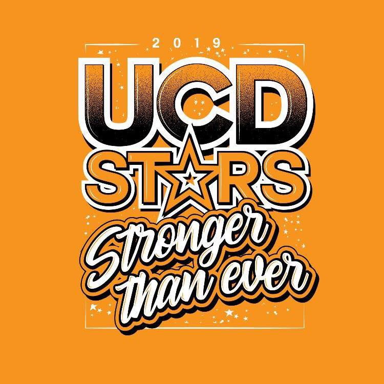

<!DOCTYPE html lang="de">
	<head>
		<meta caharset ="utf-8">
		<title> Meine erste Website</title>
		<style>
			img{
				width: 12%;
				height: auto;
			}
			
	</head>
	<body>
		<h1>Meine Person</h1>
			
			<p id="ich"> Das bin ich </p>
			<p> Ich studiere Online Medien an der <a href="https://www.hs-furtwangen.de"> Hochschule Furtwangen.</a>
			Ich wohne in Ulm, bin aufgrund von Corona noch nicht nach Furtwangen gezogen. Der Stdiengang gefällt mir bis jetzt sehr gut, 
		    außer natürlich Mathe haha. Ich bin gespannt auf alles was noch so auf mich zukommt. Ich hoffe wir könenn uns auch bald alle mal 
	        in der Hochschule im Vorelsungsraum sehen. Bis dahin bleiben wir owhl noch zu Hause vor dem Laptop.</p>

		<h1 id="team"> Mein Team </h1>
			
		<p> Ich bin seit 13 Jahren Cheerleader bei den Ulm City Dancers.</p>
		<p>Seit 2014 bin ich auch Tranerin von den kleinsten bei uns.</p>
		<p>Die sind auch tatsächlich das Team das die meisten 1. Plätze mit nach Hause bringt.</p> 
		<p>Ich frag mich ob an den guten Trainern liegt.. haha.</p>
		<p>Ich vermisse die Meisterschaften und auch das normale Training. </p>
		<p>Die <a href="https://www.tsg-soeflingen.de/abteilungen/cheerleading/"> UCD Cheerleader</a> räumen auf Ihren Meisterschaften immer ab!!</p>
		<a href #ich>Das bin ich</a>
		<a href #team>mein Team</a>
	</body>
</html>